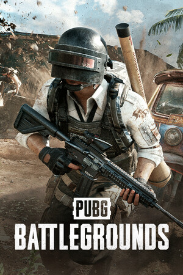
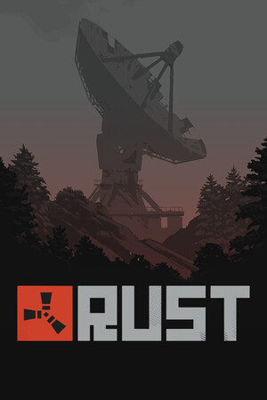

Já aconteceu? Ainda vais a tempo.
O replay buffer guarda os últimos momentos. Usa o teu atalho para transformar uma boa jogada num clipe.
Aquela jogada que ninguém ia acreditar?
Guarda-a com uma tecla. Ou deixa o Segra clipar por ti.
Sem marcas de água · Motor OBS · Licença GPLv2
SEM ENCENAÇÃO. SÓ JOGO.
Quatro jogadas reais, clipadas com o Segra.
Escolhe uma e carrega no play.
MIRAGE / AK-47
Uma sequência de eliminações no bombsite B, entre o mercado e a carrinha.
Versão web: 720p · 60 FPS. Originais capturados a 1440p · 60 FPS.
TU JOGAS. O SEGRA GRAVA.
Grava a sessão em segundo plano, guarda o que acabou de acontecer ou deixa a deteção automática encontrar os melhores momentos nos jogos compatíveis.
Explorar o projetoO replay buffer guarda os últimos momentos. Usa o teu atalho para transformar uma boa jogada num clipe.
A deteção automática marca eventos nos jogos suportados para encontrares os teus highlights.
Corta o momento no editor e partilha o clipe com os teus amigos.
O TEU JOGO. O TEU MOMENTO.
Dos competitivos aos mundos abertos.
Grava os jogos que gostas de jogar.






Captura de jogo e clipping automático têm compatibilidades diferentes. Consulta o projeto para saberes mais.
DA PRIMEIRA PARTIDA AO PRIMEIRO CLIPE
Descarrega a versão mais recente e prepara as tuas preferências de gravação.
Grava a sessão ou usa o teu atalho de replay buffer quando o momento acontecer.
Escolhe o melhor corte no editor. O próximo replay no grupo pode ser o teu.
FEITO PARA A COMUNIDADE
Mostra os teus clipes, dá sugestões e ajuda a construir o Segra.
Encontra-nos no Discord ou contribui no GitHub.